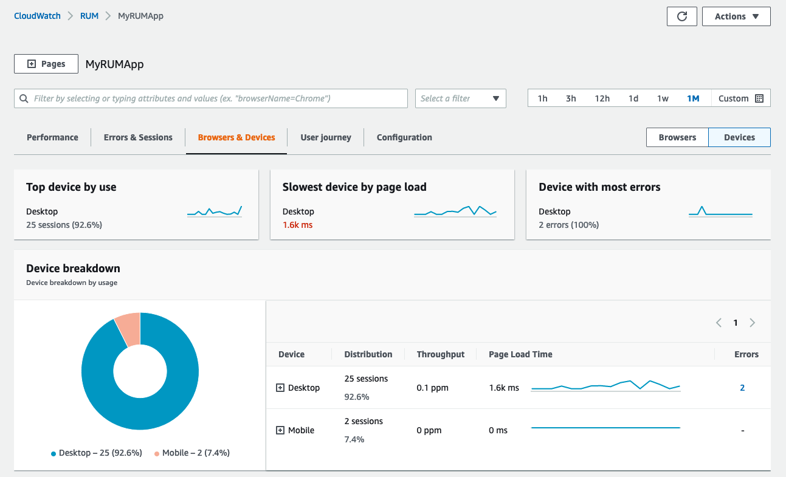
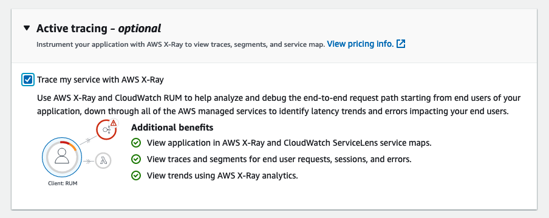

Real User Monitoring¶
With CloudWatch RUM, you can perform real user monitoring to collect and view client-side data about your web application performance from actual user sessions in near real time. The data that you can visualize and analyze includes page load times, client-side errors, and user behavior. When you view this data, you can see it all aggregated together, and also see breakdowns by the browsers and devices that your customers use.

Web client¶
The CloudWatch RUM web client is developed and built using Node.js version 16 or higher. The code is publicly available on GitHub. You can use the client with Angular and React applications.
CloudWatch RUM is designed to create no perceptible impact to your application’s load time, performance, and unload time.
Note
End user data that you collect for CloudWatch RUM is retained for 30 days and then automatically deleted. If you want to keep the RUM events for a longer time, you can choose to have the app monitor send copies of the events to CloudWatch Logs in your account.
Tip
If avoiding potential interruption by ad blockers is a concern for your web application then you may wish to host the web client on your own content delivery network, or even inside your own web site. Our documentation on GitHub provides guidance on hosting the web client from your own origin domain.
Authorize Your Application¶
To use CloudWatch RUM, your application must have authorization through one of three options.
- Use authentication from an existing identity provider that you have already set up.
- Use an existing Amazon Cognito identity pool
- Let CloudWatch RUM create a new Amazon Cognito identity pool for the application
Success
Letting CloudWatch RUM create a new Amazon Cognito identity pool for the application requires the least effort to set up. It's the default option.
Tip
CloudWatch RUM can configured to separate unauthenticated users from authenticated users. See this blog post for details.
Data Protection & Privacy¶
The CloudWatch RUM client can use cookies to help collect end user data. This is useful for the user journey feature, but is not required. See our detailed documentation for privacy related information.1
Tip
While the collection of web application telemetry using RUM is safe and does not expose personally identifiable information (PII) to you through the console or CloudWatch Logs, be mindful that you can collect custom attribute through the web client. Be careful not to expose sensitive data using this mechanism.
Client Code Snippet¶
While the code snippet for the CloudWatch RUM web client will be automatically generated, you can also manually modify the code snippet to configure the client to your requirements.
Success
Use a cookie consent mechanism to dynamically enable cookie creation in singe page applications. See this blog post for more information.
Disable URL Collection¶
Prevent the collection of resource URLs that might contain personal information.
Success
If your application uses URLs that contain personally identifiable information (PII), we strongly recommend that you disable the collection of resource URLs by setting recordResourceUrl: false in the code snippet configuration, before inserting it into your application.
Enable Active Tracing¶
Enable end-to-end tracing by setting addXRayTraceIdHeader: true in the web client. This causes the CloudWatch RUM web client to add an X-Ray trace header to HTTP requests.
If you enable this optional setting, XMLHttpRequest and fetch requests made during user sessions sampled by the app monitor are traced. You can then see traces and segments from these user sessions in the RUM dashboard, the CloudWatch ServiceLens console, and the X-Ray console.
Click the checkbox to enable active tracing when setting up your application monitor in the AWS Console to have the setting automatically enabled in your code snippet.

Inserting the Snippet¶
Insert the code snippet that you copied or downloaded in the previous section inside the <head> element of your application. Insert it before the <body> element or any other <script> tags.
Success
If your application has multiple pages, insert the code snippet in a shared header component that is included in all pages.
Warning
It is critical that the web client be as early in the <head> element as possible! Unlike passive web trackers that are loaded near the bottom of a page's HTML, for RUM to capture the most performance data requires it be instantiated early in the page render process.
Use Custom Metadata¶
You can add custom metadata to the CloudWatch RUM events default event metadata. Session attributes are added to all events in a user's session. Page attributes are added only to the pages specified.
Success
Avoid using reserved keywords noted on this page as key names for your custom attributes
Use Page Groups¶
Success
Use page groups to associate different pages in your application with each other so that you can see aggregated analytics for groups of pages. For example, you might want to see the aggregated page load times of all of your pages by type and language.
awsRum.recordPageView({ pageId: '/home', pageTags: ['en', 'landing']})
Use Extended Metrics¶
There is a default set of metrics automatically collected by CloudWatch RUM that are published in the metric namespace named AWS/RUM. These are free, vended metrics that RUM creates on your behalf.
Success
Send any of the CloudWatch RUM metrics to CloudWatch with additional dimensions so that the metrics give you a more fine-grained view.
The following dimensions are supported for extended metrics:
- BrowserName
- CountryCode - ISO-3166 format (two-letter code)
- DeviceType
- FileType
- OSName
- PageId
However, you can create your own metrics and alarms based on them using our guidance from this page. This approach allows you to monitor performance for any datapoint, URI, or other component that you need.